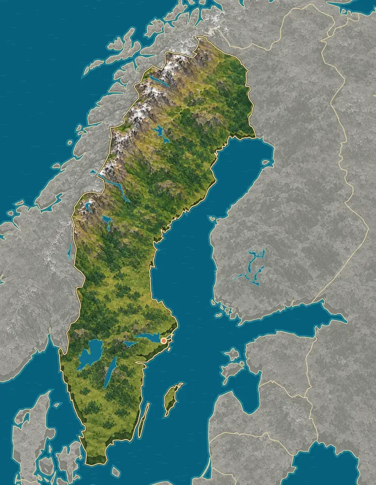
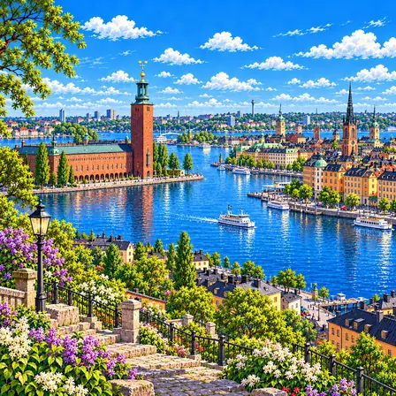
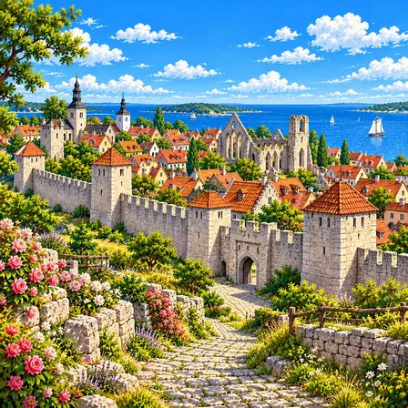
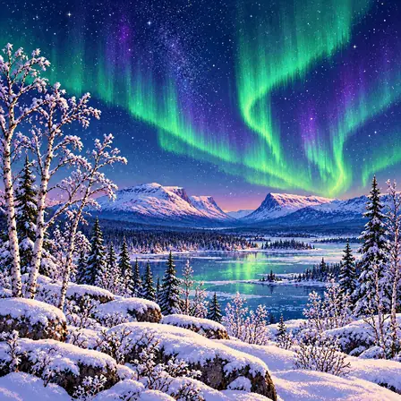
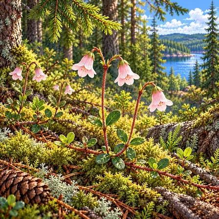
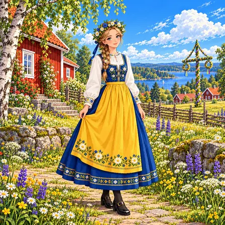
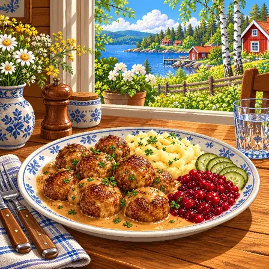
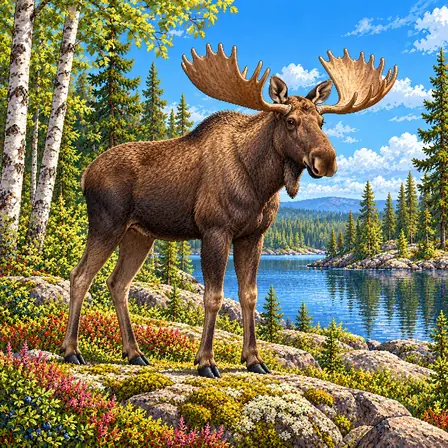
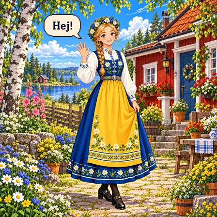
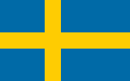

Northwestern mountains, eastern forests
The Scandinavian mountains follow the border with Norway. To the east, forested uplands and long river valleys slope down toward the Gulf of Bothnia.
World Geography Atlas › Europe › Northern Europe

Sverige
Northern lights and Vikings · the country of the Nobel Prize.

Sweden is a country of forests and lakes. Snowy mountains rise in the northwest, and the land becomes lower and flatter toward the south.
Sweden runs from the Scandinavian mountains in the northwest through eastern forests to the Gulf of Bothnia, large central lakes and southern farmland. Since the ice retreated, the land is still slowly rising.
The Scandinavian mountains follow the border with Norway. To the east, forested uplands and long river valleys slope down toward the Gulf of Bothnia.
Central Sweden has large lakes, including Vänern, the country’s largest, and lowlands. Skåne at the southern tip is low, fertile farmland.
The east coast faces the Gulf of Bothnia and the Baltic Sea and is dotted with rocky islets. The west coast faces the Skagerrak and Kattegat.
Source: Natural Earth, Land, 1:50m
The large island of Gotland lies in the Baltic Sea, and long, narrow Öland hugs the southeast coast. The capital, Stockholm, sits where Lake Mälaren meets the Baltic.
Source: Natural Earth, Land, 1:50m
Much of Sweden rests on very old, hard bedrock called the Fennoscandian Shield. The northwestern mountains preserve traces of ancient mountain-building, while Gotland and Öland have younger sedimentary rock.
Land pressed down by thick ice has been slowly rising since it melted. The High Coast has risen about 285 m since the ice age, the greatest such rebound known.
A city, a heritage site, nature, a plant, culture, food, an animal, a greeting and the flag of Sweden, each drawn as pixel art.

Stockholm is the capital of Sweden. The city spreads across many islands. The Nobel Prize ceremony is held there every year.
Stockholm, Sweden’s capital, extends across islands and waterways where Lake Mälaren meets the Baltic Sea. City Hall, built of red brick, is known for the three crowns on its tall tower. Colorful old buildings crowd Gamla Stan, the old town. Boats and quays are part of the city’s everyday landscape. Each December, the Nobel Prize ceremony is held at the Concert Hall and the banquet at City Hall.

Visby is an old trading town on an island. A stone wall more than 700 years old runs all the way around it. People still live there today.
Visby is a historic trading town on Gotland in the Baltic Sea. It played an important role in medieval Hanseatic trade, with warehouses, merchants’ houses and churches enclosed by defensive walls. Pale limestone walls, red roofs and church ruins give the town its character. Visby was inscribed on the UNESCO World Heritage List in 1995. People still live in the town today.

An aurora is light that ripples across the night sky like a green curtain. It happens when tiny particles from the sun hit the air high above Earth. You can see it on dark winter nights in northern Sweden.
Abisko and nearby northern Swedish landscapes are known for aurora watching during the darker part of the year. Charged particles associated with solar activity interact with gases high in Earth’s atmosphere under the influence of its magnetic field. Oxygen contributes green and red light, while nitrogen contributes blue and violet. Auroras ripple like curtains, changing shape and brightness all the time.

The twinflower is a small plant that creeps along the forest floor. Its pale pink, bell-shaped flowers bloom in pairs. The famous botanist Linnaeus loved it.
Twinflower, Linnaea borealis, is a small creeping woody plant rather than a vine climbing other plants. Opposite rounded oval leaves grow along low stems, while slender upright stalks fork into pairs of downward-facing pale pink bells. It occurs on mossy forest floors in Sweden and is associated with the botanist Carl Linnaeus, who admired it.

Swedish folk costumes differ in color and shape from region to region. One kind has a white blouse, a blue skirt and a yellow apron. People wear them with flowers in their hair at the midsummer festival.
Swedish regional folk costumes, or folkdräkter, vary in color and form. Sverigedräkten is a festive costume that represents the whole of Sweden. It has a white blouse, a blue bodice and skirt, and a yellow apron. At Midsummer, people may wear flower wreaths and sing or dance around a leaf-decorated pole.

Swedish meatballs are small, round balls of meat. They are served with cream sauce and mashed potatoes. A sweet-and-sour red berry jam goes with them.
Swedish meatballs, köttbullar, are small browned meatballs commonly made with minced meat, soaked breadcrumbs, onion and seasoning. Meat mixtures and recipes vary. They are served with cream gravy, mashed potatoes, tart-sweet lingonberry jam and thin pickled cucumber. A long-loved home dish, they are also a must on the Swedish Christmas table.

The moose is the biggest kind of deer. It has long legs and very high shoulders. Males grow broad antlers shaped like open hands, new each year.
The moose, called älg in Swedish, is the largest deer. Its long legs, high shoulders and broad elongated muzzle suit a life among forests, wetlands and lakeshores. It browses leaves, young twigs and aquatic plants. Males grow antlers, shed them and grow a new pair each year; antler form and size vary between individuals and with age. A male’s antlers are broad like an open hand, unlike a reindeer’s narrow, branching antlers.

Hej means "hi" in Swedish. When leaving, people say "hej då." Swedish has special letters like å, ä and ö.
Hej is a widely used Swedish greeting, pronounced roughly like ‘hey’. Hej då can be used when parting. Swedish belongs to the North Germanic language family and uses the letters å, ä and ö. Its greeting has a different spelling from Norwegian Hei, despite sounding similar.

Sweden's flag has a yellow cross on a blue background. It is a Nordic cross, set closer to the flagpole. Swedes even put little flags on birthday cakes.
Sweden's flag has a neat two-color design, a yellow cross on a blue field. It is a Nordic cross shape, with the upright bar of the cross set toward the flagpole. Blue and yellow are colors that have been used in the Swedish royal coat of arms, seen even in flag pictures hundreds of years ago. Its present form was officially adopted in 1906. In Sweden people feel so close to their flag that they even stick it into birthday and celebration cakes.